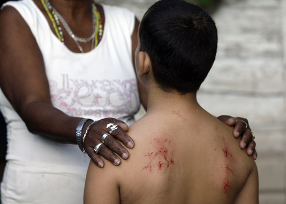

La Ceremonia de Nkimba
El "Rayamiento" es la ceremonia sagrada de iniciación en el Palo Mayombe. No todas las personas deben rayarse; depende estrictamente de la aprobación de la Nganga tras una consulta investigadora con un Tata. Si la espiritualidad de la persona no es compatible, rayarse podría traer consecuencias negativas. Al iniciarse, el "Nguello" (iniciado) pasa a estar bajo la protección del fundamento de su padrino y comienza su aprendizaje en el culto a los muertos y la naturaleza.
El Procedimiento
- 🛡️ Preparación: Abstinencia sexual de 7 días previos. Ofrenda espiritual a los antepasados.
- 🌊 Limpieza Previa: Ceremonia en río, mar o monte para ratificar y limpiar el camino.
- 🌿 Baño y Penitencia: Baño con omiero de hierbas y actos de penitencia dictados por el Tata.
- 👁️ La Ceremonia: El iniciado entra vendado y arrodillado. Se consulta constantemente con el Chamalongo.
- 🔪 El Pacto: Se realizan pequeñas incisiones (rayas) en puntos clave del cuerpo para pactar con la entidad y limpiar males.
- 👑 Juramento: Se presenta el fundamento sobre la cabeza (o según la rama) y se quita la venda, saludando a la Nganga.
Beneficios y Compromiso
El rayamiento otorga una potente protección de por vida ("hasta el descanso eterno") y purificación profunda. Abre caminos en salud, desenvolvimiento y evolución espiritual. El iniciado entra en una hermandad (Munanso) donde encontrará guía y apoyo.
Prohibiciones Post-Ceremonia
Transitorias (3 días): No bañarse (o no mojar las marcas), no mirarse al espejo, no alcohol, no sexo.
Definitivas: No revelar secretos de la ceremonia. Restricciones alimenticias específicas (ajonjolí, maní, vísceras, animales que caminan hacia atrás) según la casa y la Nganga.

¿Qué sigue?
Tras el rayamiento, se inicia un camino de aprendizaje y respeto a los juramentos de lealtad y fraternidad. El iniciado cuenta ahora con la bendición de su Mpungo y la protección de su familia religiosa.